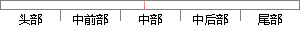

通过提前终止自动选择超参数的唯一显著代价就是训练期间要定期评估验证集。
片段位置图

相似结果|
1
原句片段：通过提前终止自动选择超参数的唯一显著代价就是训练期间要定期评估验证集。
相似片段 1：我们可以研究线性回归,它的真实代价函数是二次的,因此我们可以使用相同的方法分析...通过提前终止自动选择超参数的唯一显著的代价是训练期间要定期评估验证集。在理想...
相似片段 2：通过提前终止自动选择超参数的唯一显著的代价是训练期间定期评估验集。 在理想...提前终止需要验证集,这意味着某些训练数据不能被馈送到模型。为了更好利用数据,...
|
※ 片段修改建议 ※
近似词参考：- 通过：经由过程
- 提前：提早
- 终止：停止
- 自动：主动
- 唯一：独一 仅有 惟一
- 显著：明显
- 代价：价格 价值 价钱
- 就是：便是
- 训练：练习
- 期间：时代 时期
- 定期：按期
系统自动生成语句：经由过程提早停止主动选择超参数的独一明显价格便是练习时代要按期评估验证集。
注：本片段修改建议为系统自动生成，仅供参考。